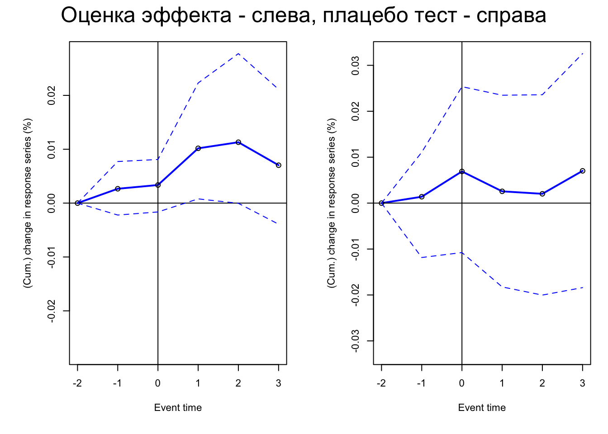
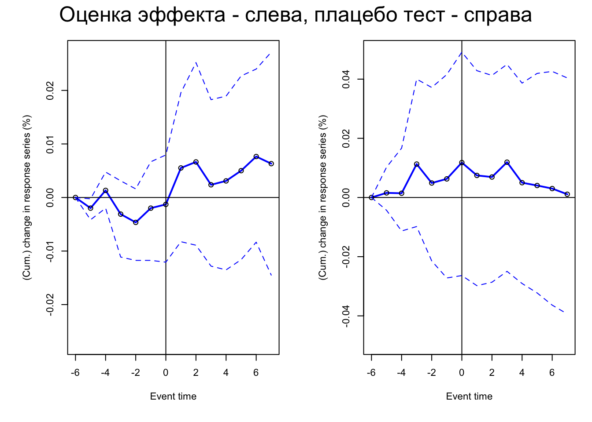
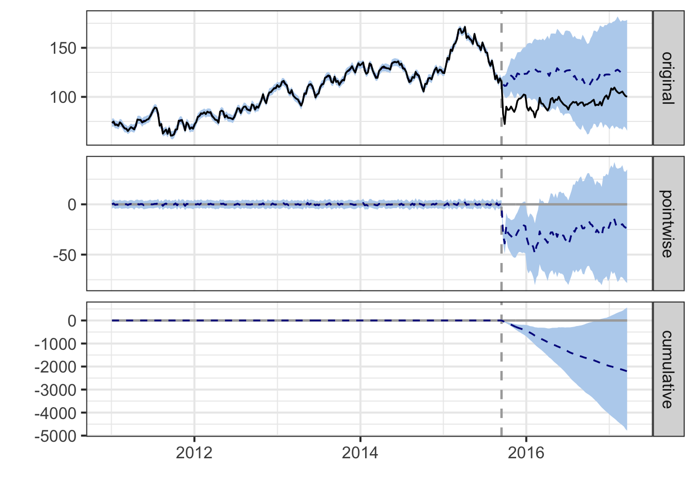

library('dplyr')
library('lubridate')
library('causaldata')13 Событийный анализ
13.1 Пример “руками”
10 августа 2015 года Google объявила о реорганизации своей корпоративной структуры. «Google» больше не будет владеть кучей других компаний, таких как FitBit и Nest, вместо этого появится новая материнская компания под названием «Alphabet», которая будет владеть Google вместе со всем остальным.
Как к этому отнесся фондовый рынок? Чтобы выяснить это, используем данные о цене акций GOOG (символ акции Google раньше и Alphabet сейчас) с мая 2015 года по конец августа 2015 года, а также цену индекса S&P 500, чтобы использовать его в качестве рыночного индекса.
13.1.1 Подготовка данных
Импортируем данные и обозначаем дату иследуемого события:
goog <- causaldata::google_stock
event <- ymd('2015-08-10')Посмотрим как ведут себя котировки акций и рыночного индекса вокруг даты события.
Сначала подготовим данные для графика.
goog_plot <- data.frame(date = goog$Date,
return = c(goog$Google_Return, goog$SP500_Return),
object = c(rep('Google', nrow(goog)),
rep('SP500', nrow(goog))))А теперь посмотрим на сам график:
library('ggplot2')
ggplot(goog_plot, aes(date, return)) +
geom_line(aes(colour=object)) +
geom_vline(aes(xintercept=event), linetype = 'dashed')
Доходности Google и S&P 500 имеют тенденцию повышаться и падать одновременно. Это одна из причин учитывать в расчете рыночный индекс – мы не хотим путать движение рынка с движением акций. Кроме того, доходность в большинстве случаев очень плоская. Бывают всплески — например, большой в середине июля. Но в целом можно ожидать, что доходность будет оставаться на довольно постоянном уровне большую часть времени, пока что-нибудь не произойдет.
13.1.2 Выбор окна
Сначала мы выберем estimation window и event window.
Для estimation window возьмём период с мая по июль.
Для event window возьмем данные за несколько дней до события – с 6 по 24 августа. Далее мы будем использовать данные из event window для построения моделей прогнозирования.
# Estimation window
estimation_data <- goog %>% filter(Date >= ymd('2015-05-01') & Date <= ymd('2015-07-31'))
# Event window
event_data <- goog %>% filter(Date >= event - days(7) & Date <= event + days(14))13.1.3 Аномальная доходность
Используя данные estimation window, оценим прогнозную модель. Затем, используя данные event window, оценим аномальную доходность.
# CAPM
capm <- lm(Google_Return ~ SP500_Return, data = estimation_data)
# Abnormal return
event_data <- event_data %>%
mutate(AR_mean = Google_Return - mean(estimation_data$Google_Return),
AR_market = Google_Return - SP500_Return,
AR_risk = Google_Return - predict(capm, newdata = event_data))Нарисуем графики аномальных доходностей, рассчитанных разными методами.
AR_plot <- data.frame(date = event_data$Date,
AR = c(event_data$AR_mean, event_data$AR_market, event_data$AR_risk),
object = c(rep('means-adjusted rm', nrow(event_data)),
rep('market-adjusted rm', nrow(event_data)),
rep('risk-adjusted rm', nrow(event_data))))
ggplot(AR_plot, aes(date, AR))+
geom_line(aes(colour=object))+
geom_vline(aes(xintercept=event), linetype = 'dashed')На графике видим довольно большой всплеск аномальной доходности сразу после 10 августа, независимо от того, какой из трех методов мы используем. Однако это всего лишь однодневный всплеск. Как и следовало ожидать на эффективном рынке, Google быстро достигает своей новой цены, включающей Alphabet, а затем дневная доходность снова падает до нуля (хотя сама цена выше, чем раньше). При этом мы не видим изменений в доходности до события, что говорит нам о том, что сбытие не было ожидаемым, и утечки отсутствовали.
Также видим, что примерно 20 августа means adjusted abnormal return падает, в то время как остальные аномальные доходности так сильно не меняются. Вероятно в этот момент цена Google упала, но и рынок имел тенденцию к понижению. Это не результат изменений Alphabet, поскольку это произошло со всем рынком. Это одна из веских причин использовать прогностический метод, учитывающий движения рынка.
График движения акций и аномальных доходностей около 20 августа также подталкивают нас к использованию узкого событийного окна. Учитывая, что реакция Alphabet была краткосрочной в рамках одного дня, изменения, произошедшие полторы недели спустя, вероятно, не связаны с изменением Alphabet.
13.1.4 Тестирование значимости события
# Test
goog$AR_hat <- predict(capm, newdata = goog)
AR_mean <- mean(goog$AR_hat)
test <- goog %>% mutate(shift = (AR_hat - AR_mean)^2)
se <- sqrt(sum(test$shift)/nrow(test))
event_data$t <- event_data$AR_risk/seggplot(event_data, aes(x= Date, y = t)) +
geom_line() +
geom_vline(aes(xintercept = event), linetype = 'dashed') +
geom_hline(aes(yintercept = 1.96), linetype = 'dashed') +
geom_hline(aes(yintercept = -1.96),linetype = 'dashed')13.2 Пример с помощью пакета eventstudies
Пример на основе статьи (Ставнийчук, Павлова, 2023)
Подключаем пакеты:
# library('devtools')
# devtools::install_github("nipfpmf/eventstudies", ref="master")
library('eventstudies')
library('dplyr')
library('stringr')
library('dplyr')Подгружаем набор данных со списком событием, включающий время и участников.
# Подгружаем датасет с новостями
load("event_study_data/news_predupr.RData")Подгружаем набор данных с ежедневными котировками нефтяных компаний и рыночным индексом (индекс IMOEX).
# Подгружаем котировки
stocks_day <- read.csv("event_study_data/stocks_day.csv")
stocks_day$time <- as.POSIXlt(stocks_day$time, format="%Y-%m-%d")Заполняем пропуски в котировках и переходим от цен к доходностям:
dates <- as.data.frame(seq(as.Date("2012-01-01"), as.Date("2022-01-01"), by = "day"))
colnames(dates)[1] <- 'time'
stocks_day <- left_join(dates, stocks_day, by = c('time'))
stocks_day <- stocks_day[order(stocks_day$time),]
stocks_day<- stocks_day %>% mutate(BANE.CLOSE = na.locf0(BANE.CLOSE),
SIBN.CLOSE = na.locf0(SIBN.CLOSE),
LKOH.CLOSE = na.locf0(LKOH.CLOSE),
ROSN.CLOSE = na.locf0(ROSN.CLOSE),
SNGS.CLOSE = na.locf0(SNGS.CLOSE),
TATN.CLOSE = na.locf0(TATN.CLOSE),
IMOEX.CLOSE = na.locf0(IMOEX.CLOSE),
MOEXOG.CLOSE = na.locf0(MOEXOG.CLOSE)) %>%
mutate(bane = BANE.CLOSE/lag(BANE.CLOSE)-1,
sibn = SIBN.CLOSE/lag(SIBN.CLOSE)-1,
lkoh = LKOH.CLOSE/lag(LKOH.CLOSE)-1,
rosn = ROSN.CLOSE/lag(ROSN.CLOSE)-1,
sngs = SNGS.CLOSE/lag(SNGS.CLOSE)-1,
tatn = TATN.CLOSE/lag(TATN.CLOSE)-1,
imoex = IMOEX.CLOSE/lag(IMOEX.CLOSE)-1,
moexog = MOEXOG.CLOSE/lag(MOEXOG.CLOSE)-1)
stocks_day <- stocks_day[-c(1:3),-c(2:9)]
stocks_day_zoo <- read.zoo(stocks_day[,c(1:7)], format = "%Y-%m-%d")
imoex <- read.zoo(stocks_day[,c(1,8)], format = "%Y-%m-%d")Оцениваем эффект на окнах 3, 7 и 15 дней ( в статье есть и внутридневные эффекты, но поскольку там больше данных и считается все дольше – реплицируем кусочек на дневных данных)
es_day_predupr3 <- eventstudy(firm.returns = stocks_day_zoo,
event.list = news_predupr,
event.window = 3,
type = "marketModel",
to.remap = TRUE,
remap = "cumsum",
inference = TRUE,
inference.strategy = "bootstrap",
model.args = list(market.returns=imoex))
es_day_predupr7 <- eventstudy(firm.returns = stocks_day_zoo,
event.list = news_predupr,
event.window = 7,
type = "marketModel",
to.remap = TRUE,
remap = "cumsum",
inference = TRUE,
inference.strategy = "bootstrap",
model.args = list(market.returns=imoex))
es_day_predupr15 <- eventstudy(firm.returns = stocks_day_zoo,
event.list = news_predupr,
event.window = 15,
type = "marketModel",
to.remap = TRUE,
remap = "cumsum",
inference = TRUE,
inference.strategy = "bootstrap",
model.args = list(market.returns=imoex)) Для плацебо теста сгенерим случайным образом даты из того же диапазона дат для тех же компаний.
# Плацебо тест
set.seed(123)
predupr <- sample(seq(as.Date('2012/01/01'), as.Date('2019/01/01'), by="day"), 9)
placebo_news_predupr <- cbind(news_predupr[3], predupr)
colnames(placebo_news_predupr)[2] <- 'when'Аналогично оценим плацебо эффекты:
placebo_es_day_predupr3 <- eventstudy(firm.returns = stocks_day_zoo,
event.list = placebo_news_predupr,
event.window = 3,
type = "marketModel",
to.remap = TRUE,
remap = "cumsum",
inference = TRUE,
inference.strategy = "bootstrap",
model.args = list(market.returns=imoex))
placebo_es_day_predupr7 <- eventstudy(firm.returns = stocks_day_zoo,
event.list = placebo_news_predupr,
event.window = 7,
type = "marketModel",
to.remap = TRUE,
remap = "cumsum",
inference = TRUE,
inference.strategy = "bootstrap",
model.args = list(market.returns=imoex))
placebo_es_day_predupr15 <- eventstudy(firm.returns = stocks_day_zoo,
event.list = placebo_news_predupr,
event.window = 15,
type = "marketModel",
to.remap = TRUE,
remap = "cumsum",
inference = TRUE,
inference.strategy = "bootstrap",
model.args = list(market.returns=imoex)) Выведем графики настоящего эффекта и плацебо теста для каждого из событийных окон:
### Событийное окно (-3;+3) дня
par(mfrow=c(1,2),oma = c(0, 0, 2, 0), mai=c(.8,.8,.2,.2), cex=.7)
plot(es_day_predupr3)
plot(placebo_es_day_predupr3)
mtext("Оценка эффекта - слева, плацебо тест - справа", outer = TRUE, cex = 1.5)
### Событийное окно (-7;+7) дней
par(mfrow=c(1,2),oma = c(0, 0, 2, 0), mai=c(.8,.8,.2,.2), cex=.7)
plot(es_day_predupr7)
plot(placebo_es_day_predupr7)
mtext("Оценка эффекта - слева, плацебо тест - справа", outer = TRUE, cex = 1.5)
### Событийное окно (-15;+15) дней
par(mfrow=c(1,2),oma = c(0, 0, 2, 0), mai=c(.8,.8,.2,.2), cex=.7)
plot(es_day_predupr15)
plot(placebo_es_day_predupr15)
mtext("Оценка эффекта - слева, плацебо тест - справа", outer = TRUE, cex = 1.5)13.3 Causal Impact
options(warn = -1)
library(tseries)
library(ggplot2)
#devtools::install_github("google/CausalImpact")
library(CausalImpact)start = "2011-01-03"
end = "2017-03-20"
quote = "AdjClose"
VolksWagen <- get.hist.quote(instrument = "VOW.DE", start, end, quote, compression = "w")
BMW <- get.hist.quote(instrument = "BMW.DE", start, end, quote, compression = "w")
Allianz <- get.hist.quote(instrument = "ALV.DE", start, end, quote, compression = "w")
series <- cbind(VolksWagen, BMW, Allianz)colnames(series) <- c("VolksWagen", "BMW", "Allianz")
autoplot(series, facet = NULL) + xlab("") + ylab("Adjusted Close Price")pre.period <- as.Date(c(start, "2015-09-14"))
post.period <- as.Date(c("2015-09-21", end))impact_vw <- CausalImpact(series[, 1], pre.period, post.period, model.args = list(niter = 1000, nseasons = 52))
plot(impact_vw)
summary(impact_vw)Posterior inference {CausalImpact}
Average Cumulative
Actual 94 7442
Prediction (s.d.) 122 (17) 9649 (1348)
95% CI [87, 155] [6886, 12228]
Absolute effect (s.d.) -28 (17) -2206 (1348)
95% CI [-61, 7] [-4786, 557]
Relative effect (s.d.) -21% (12%) -21% (12%)
95% CI [-39%, 8.1%] [-39%, 8.1%]
Posterior tail-area probability p: 0.04966
Posterior prob. of a causal effect: 95.034%
For more details, type: summary(impact, "report")summary(impact_vw, "report")Analysis report {CausalImpact}
During the post-intervention period, the response variable had an average value of approx. 94.21. In the absence of an intervention, we would have expected an average response of 122.13. The 95% interval of this counterfactual prediction is [87.16, 154.79]. Subtracting this prediction from the observed response yields an estimate of the causal effect the intervention had on the response variable. This effect is -27.93 with a 95% interval of [-60.58, 7.05]. For a discussion of the significance of this effect, see below.
Summing up the individual data points during the post-intervention period (which can only sometimes be meaningfully interpreted), the response variable had an overall value of 7.44K. Had the intervention not taken place, we would have expected a sum of 9.65K. The 95% interval of this prediction is [6.89K, 12.23K].
The above results are given in terms of absolute numbers. In relative terms, the response variable showed a decrease of -21%. The 95% interval of this percentage is [-39%, +8%].
This means that, although it may look as though the intervention has exerted a negative effect on the response variable when considering the intervention period as a whole, this effect is not statistically significant, and so cannot be meaningfully interpreted. The apparent effect could be the result of random fluctuations that are unrelated to the intervention. This is often the case when the intervention period is very long and includes much of the time when the effect has already worn off. It can also be the case when the intervention period is too short to distinguish the signal from the noise. Finally, failing to find a significant effect can happen when there are not enough control variables or when these variables do not correlate well with the response variable during the learning period.
The probability of obtaining this effect by chance is very small (Bayesian one-sided tail-area probability p = 0.05). This means the causal effect can be considered statistically significant. impact_vw_reg <- CausalImpact(series, pre.period, post.period, model.args = list(niter = 1000, nseasons = 52))
plot(impact_vw_reg)summary(impact_vw_reg)Posterior inference {CausalImpact}
Average Cumulative
Actual 94 7442
Prediction (s.d.) 126 (4) 9989 (313)
95% CI [118, 134] [9351, 10594]
Absolute effect (s.d.) -32 (4) -2546 (313)
95% CI [-40, -24] [-3152, -1909]
Relative effect (s.d.) -25% (2.4%) -25% (2.4%)
95% CI [-30%, -20%] [-30%, -20%]
Posterior tail-area probability p: 0.00103
Posterior prob. of a causal effect: 99.89701%
For more details, type: summary(impact, "report")